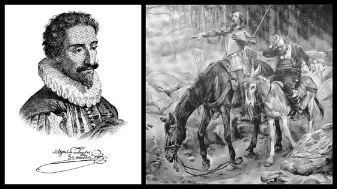

Don Quichotte

.Miguel cervantes - Quichotte
Thiên truyện của Cervantès, kể từ khi ra đời đã sáng tạo ra một nhân vật huyền thoại và mở đầu cho nền văn học hiện đại.
“Quichotte”, bản dịch mới của Aline Schulman
Don Quichotte ư? Trước hết, đó là một nhân vật nổi tiếng nhất, tiêu biểu nhất của văn học thế giới, một nhân vật vừa chính diện vừa phản diện, vừa thân tình vừa lố bịch, nửa khôn nửa dại, vừa lý tưởng vừa đáng thương, quý tộc nhà quê, một hình ảnh được khắc họa trong những cuốn tiểu thuyết hiệp sĩ và, trên những chặng đường lưu đãng, lại kè kè bên mình người hầu Sancho Panca, râu ria xồm xoàm và chiếc mũi đỏ hỏn của một tên hề.
Tiếp đó là thiên truyện của Cervantès, một trong những thiên tiểu thuyết hiện đại đầu tiên, đã dám nói hết và nói ngược lại, bất chấp kiểm duyệt, sáng tạo ra truyện trong truyện và đưa nó lên tột đỉnh, chế nhạo những chuẩn mực cũ, làm cho người ta cười rồi lại khóc, kể lại thời đại mình và mọi thời đại, đi qua sân khấu, thơ, sách tiểu sử cho đến những lời thú nhận đầy bối rối của tác giả của nó…
Vậy nên, Don Quichotte một công việc rõ ràng xong xuôi, tại sao còn xuất hiện trở lại? Thế nhưng phải chăng nó đã thực sự được kết toán rồi. Hay nói cách khác, bây giờ người ta còn đọc nó nữa không? Và điều này ta cần thành thật! Ai biết đến nhân vật Don Quichotte? Cả thế giới! Ai đã từng đọc trọn vẹn thiên truyện nguyên bản của Cervantès? Người giơ ngón tay lên kể ra không nhiều lắm. Quả tình người ta cũng nhận thấy rằng những tác phẩm lớn có tính chất nền tảng của văn học châu Âu như Faust của Goethe hay Thần khúc của Dante xem ra ngày nay cũng vắng bóng. Vậy mà cái bí ẩn vẫn tồn tại và càng sững sờ biết bao với Quichotte, một tác phẩm mới đã trở thành một sản phẩm đại chúng, để kể cũng như để đọc và chủ yếu bao gồm những lời đối thoại trực tiếp hay gián tiếp. Phải chăng đấy là do dịch thuật? Nói rộng hơn, có phải Shakespeare, Dante, Goethe và những người khác nữa phải chịu những chuyển thể sang tiếng Pháp quá phóng túng, lỗi thời hay quá tồi? Ít nhất thì vấn đề này cũng cần phải đặt ra.
Bản dịch mới của Aline Schulman, đó là kết quả của sáu năm miệt mài căng thẳng để mang lại cho bạn đọc một Don Quichotte với chất thanh thoát, tự nhiên trong khi những bản dịch trước đây đã xỉn màu như chiếc bàn mà lớp véc ni đã ngả màu với thời gian. Bản dịch xuất sắc đầu tiên của tập 1 là của César Oudin năm 1614, và bản dịch tập 2 của Francois de Rosset năm 1618, tiếp theo là của Jean Cassou, Louis Viardot, Franis de Miomache… với nhiều lối dịch khác nhau. Nhưng nếu dịch đồng thời còn có nghĩa là phản, thì tại sao lại không thừa nhận sự phản lại đó đã nhân đôi tài năng của tác giả bằng tài năng của dịch giả, khi bản thân họ cũng là một nhà văn lớn? Những trường hợp này thường hiếm hoi, chẳng hạn như Edgar Poe thông qua Baudelaire, Melville qua Giono, Conrad qua Gide, hay Kafka qua Vialatte. Nhưng đôi khi kết quả lại là một thảm bại.
Cervantès, suýt chết đói, đã cố tình đưa vào tác phẩm mình những gì khiến cho một công chúng rộng lớn thích thú, và ông đã thành công một cách thiên tài. Một trong những tác giả đầu tiên có sách bán chạy nhất chính là ông. Và tại sao, qua những thế kỷ, tác phẩm Don Quichotte lại xa rời chúng ta trong khi nhân vật Don Quichotte lại trở thành gần gũi với chúng ta? Aline Schulman muốn uốn nắn cái khuynh hướng đó, và để rồi khi câu hỏi: “Ai đọc Don Quichotte?” thì tất cả những bàn tay đều giơ lên. Không bao giờ có cái gì lại mới trong văn học như những tác phẩm cổ điển.
Trở về với chiếc quán trọ “phi hiện thực” của Cervantès
Truyền thống lâu đời của chủ nghĩa hiện thực tâm lý đã tạo ra những quy tắc hầu như không thể vi phạm:
1. Phải đưa lại những thông tin tối đa về nhân vật: ngoại hình, cách ăn nói cư xử.
2. Phải hiểu biết quá khứ của nhân vật để qua đó thấy được những động cơ chi phối hành vi của nhân vật đó.
3. Nhân vật phải độc lập hoàn toàn, tức là tác giả và những nhận định của mình phải biến mất đi trong tác phẩm.
Thế nhưng nhà văn Musil của trường phái hiện đại đã phá hủy cái hợp đồng giữa tác phẩm và tác giả đó, cùng với những nhà văn khác như Broch, Gombrowicz. Những nhân vật của họ, kẻ thì không có một ngoại hình rõ rệt, kẻ thì không quá khứ. Đấy là một nhân vật của tưởng tượng, một cái tôi thể nghiệm.
Như vậy là tiểu thuyết lại gắn bó trở lại với những bước khởi đầu của nó. Người ta không thể nghĩ được rằng Don Quichotte là một con người có thật. Vậy mà trong ký ức của chúng ta, có nhân vật nào lại sống hơn ông?
Những tiểu thuyết gia lớp đầu tiên không có những sự dè dặt trước cái không thể có. Trong cuốn đầu của bộ Don Quichotte, có một chiếc quán trọ nào đó giữa Tây Ban Nha, ở đó khắp bàn dân thiên hạ, do tình cờ, đã gặp gỡ nhau: Don Quichotte, Sancho Panca rồi Cardenio, có vị hôn thê là Lucinde bị một anh chàng Don Fernand nào đó lột trần, và cả Dorothée, cô gái bị Don Fernand bỏ rơi, sau đấy nữa là chính anh chàng Don Fernand ấy cùng với Lucinde, rồi một viên sĩ quan trốn khỏi trại tù người Maure, rồi người em, người mà ông ta tìm kiếm bao năm, rồi lại cô con gái ông ta là Claire và cả người yêu theo gót cô ta, và bản thân anh chàng này lại bị những tay chân của người bố mình theo đuổi.
Một sự chồng chất những chuyện trùng hợp và những cuộc gặp gỡ không thể nào có được. Nhưng đối với Cervantès, ta không thể coi đó là một sự ngờ nghệch hay vụng về. Lúc bấy giờ tiểu thuyết chưa ký bản hợp đồng với người đọc về việc phải giống như sự thực. Nó không muốn phỏng theo thực tại, mà muốn làm người ta vui thích, kinh ngạc, bất ngờ và bị quyến rũ, và ở đó nói lên kỳ tài của tác giả.
Thế kỷ XIX bắt đầu với một sự thay đổi to lớn trong lịch sử tiểu thuyết, giống như một cú sốc. Nhu cầu mô phỏng thực tại lập tức đưa lại sự chế nhạo đối với cái quán trọ của Cervantès. Thế kỷ XX thường lại nổi loạn chống lại cái di sản của thế kỷ XIX. Song le người ta không thể đơn giản quay về với cái quán trọ Cervantès. Giữa nó và chúng ta, kinh nghiệm của chủ nghĩa hiện thực thế kỷ XIX tự áp đặt theo cái cách là “thủ pháp về những sự trùng hợp không thể có” đã không thể còn hồn nhiên nữa. Nó đã trở thành hay cố tình trở thành điều kỳ cục, buồn cười, nhai lại hay hoang tưởng và mê sảng.
Đấy là trường hợp thiên truyện đầu tay của Kafka: Amérique (Mỹ). Đọc chương 1 với sự gặp gỡ hoàn toàn không thể có được giữa Karl Rossmann và ông bác anh ta: nó giống như một ký ức hoài cổ về cái quán trọ Cervantès. Nhưng trong thiên truyện này, những tình huống không thật (không thể xảy ra) lại được khơi gợi lên với đầy đủ chi tiết và với cái ảo ảnh về hiện thực khiến người ta có cảm giác bước vào một thế giới dù không thể có nhưng lại thực hơn cả thực tế. Chúng ta hãy ghi nhớ: Kafka được đưa vào thế giới “siêu thực” đầu tiên của ông (trong sự hòa trộn đầu tiên giữa hiện thực và mộng mơ) bởi cái quán trọ của Cervantès, và bởi cánh cửa của loại hài kịch thông tục vaudeville.